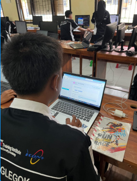

Perkenalkan...
Nama saya Farrel Zacky Nasywa One Aundra. Saya adalah siswa SMKN 1 Nglegok, kelas 11 TKJ 1 (Teknik Komputer dan Jaringan).
Saya sangat suka mempelajari dan mendalami komputer jaringan, mulai dari dasar-dasar jaringan komputer hingga hal-hal lanjutan.
Selain itu, saya belajar banyak hal menarik di jurusan TKJ ini.